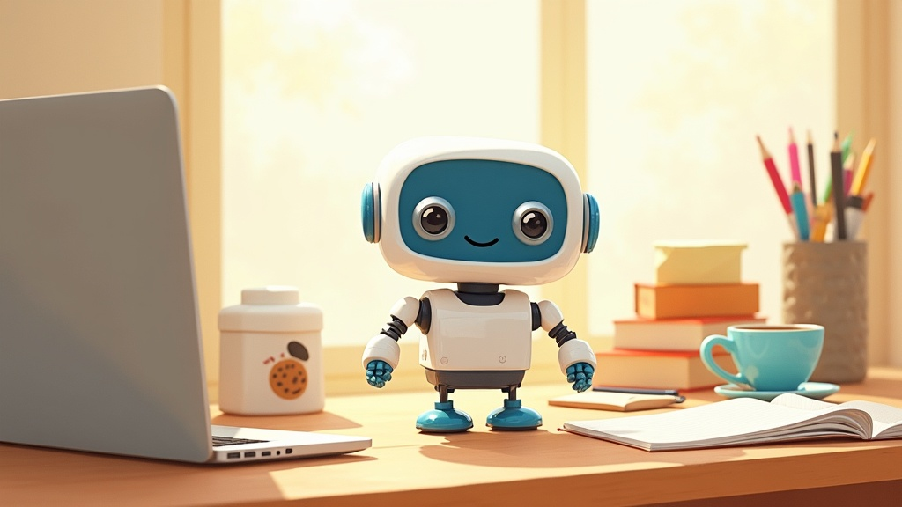
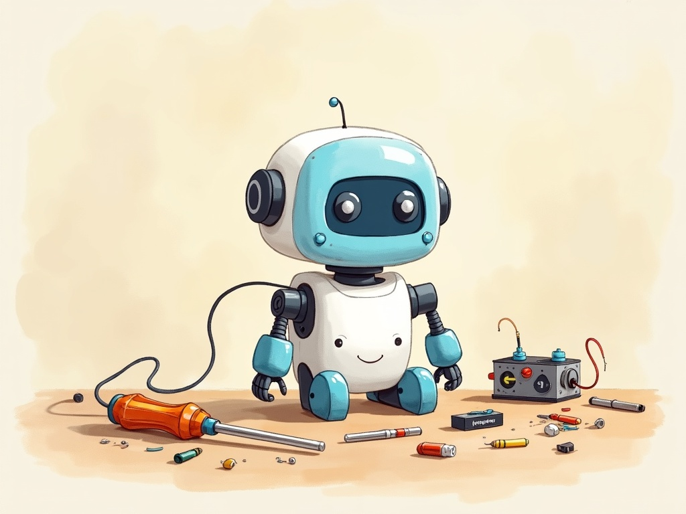
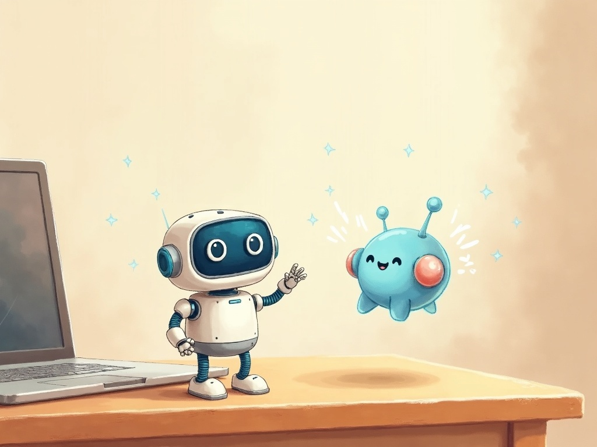

你不用背程式語法。用自然語言把想法說給 AI 聽，讓它幫你寫出真正的 Arduino 程式；先在 3D 模擬器裡驗證，再上傳到桌上的真機器人。

一學期 · 五篇 18 章，外加一篇進階特別單元。CH00–14 只要電腦＋模擬器，CH15 起接上真正的 OTTO。


要上真機才需要這些工具（Windows）。前 15 章只用 3D 模擬器，免安裝、免下載。
💡 全部工具也集中在 GitHub Release 工具包；驅動裝法看 CH02、Arduino IDE 與函式庫看 CH15、馬達校正看 CH16、AI 全能控制看 otto-skill 特別單元。
不背語法，重點是「怎麼開口叫 AI 幫你做」。每步都附可直接複製的自然語言提示詞。
既學「跟 AI 來回迭代修程式」的工作法，也學 loop() 迴圈與時序控制的程式功。
可旋轉 3D OTTO，程式按下執行立刻動給你看。前 15 章不用碰硬體。
模擬器跑的就是原廠 Otto9 格式的 C++。模擬確認 OK，複製上傳真機零修改。
複製提示詞、送出、看 AI 生成——全班疊出來的程式一致，不會各寫各的。
期末每個人的程式都會在真正的 OTTO 上表演，成果看得見、摸得到。